小饱日常 · v0.2.2 验收
打开应用 · 验收首页 · 来源、哈希与验证结果 · 原始基线来源
本地状态：PASS_WITH_RETRY。相同源码两次完整回归均为159/160，分别遇到不同加载总预算超时；两个原例按原预算定向2/2通过。Web构建、Pages构建通过，Pages交互4/4通过。未宣称单轮160全绿。所有截图来自临时上下文与合成数据。
后续独立 CI 发现测试在纵向滚动后复用了旧触点坐标，现已改为每次手势前测量并确认命中月历；原手势重复3/3、相关8/8通过。应用源码、18张截图及历史来源不变。最新完整 CI、Preview 与验收状态见 PR #17。
实际测试及捕获源码：afc908261f20646e2307c119dc32e9c02f5eecbc。整合分支等价源码：eda099dfc92d913562581bbc5a6b4e3138162ed2；通过 cherry-pick 整合，src/tests/package 内容完全相同，完整 Git blob 清单可供核对。测试没有在后者上重复运行。
原始设计参考
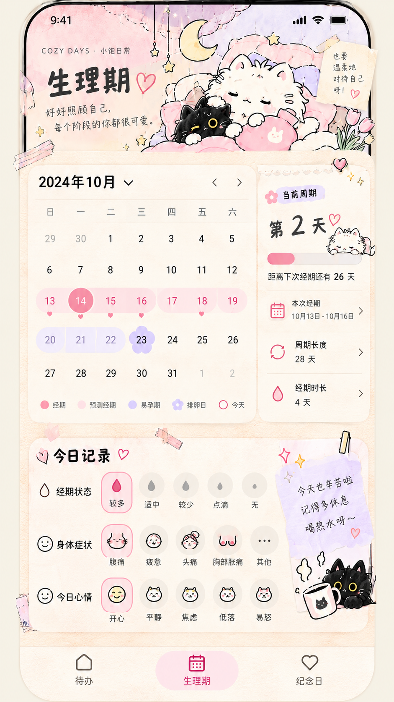
360 × 740 · 相同数据前后对照
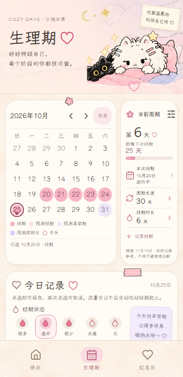
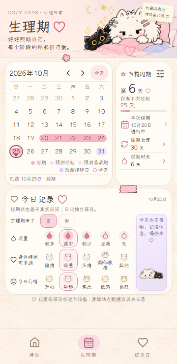
393 × 852 · 相同数据前后对照
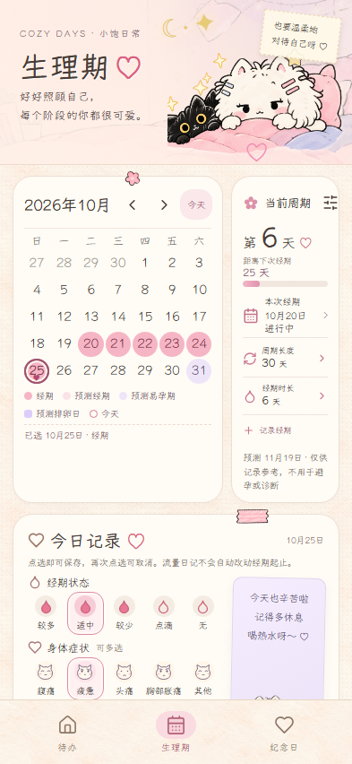
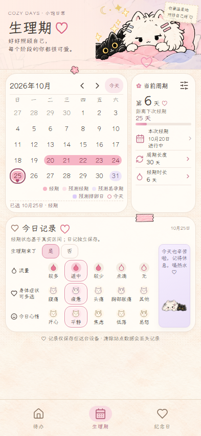
430 × 932 · 相同数据前后对照
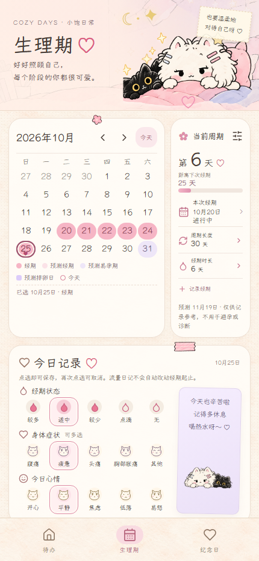
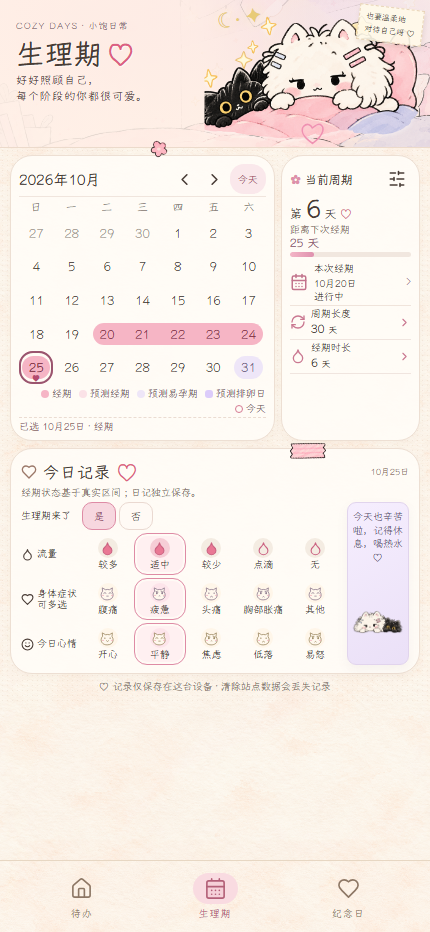
前后统一：上海时区、2026-10-25 12:00；9月20–25日与10月20日起进行中；今天适中／疲惫／平静；设置30／6。等待 Yozai 实际 loaded 和全部图片 decode 后拍摄。
安全区、六周与空记录
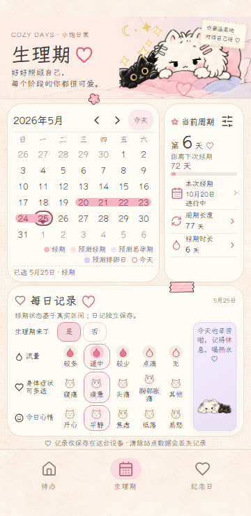
矮屏与150%字体：自然滚动降级
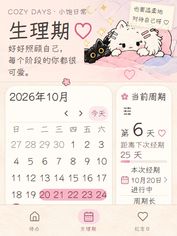
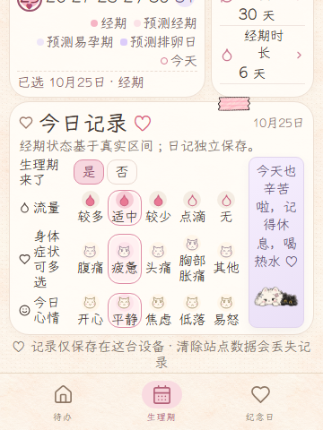
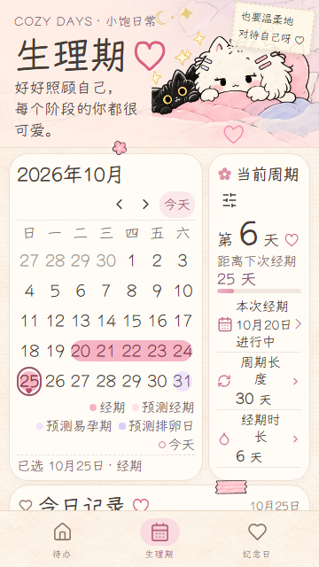
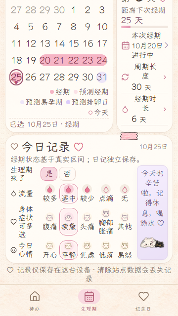
日期行不相交图例，摘要末控件位于卡片内；所有日历、摘要、流量、症状与心情控件可滚动到，心情文字末边不压底部导航。
色带与数据保护
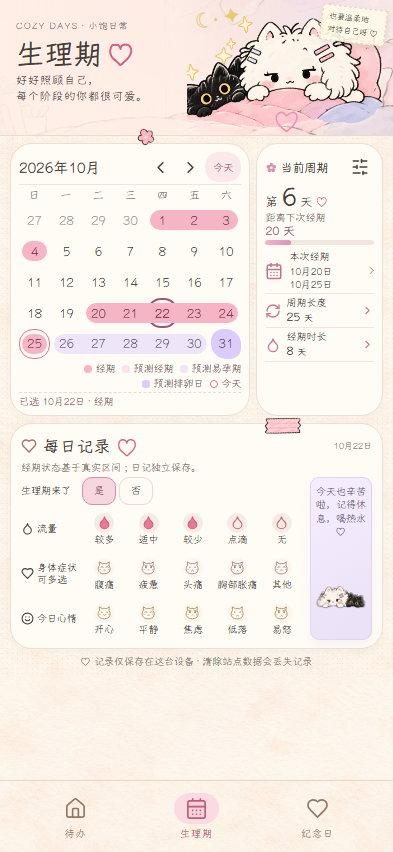
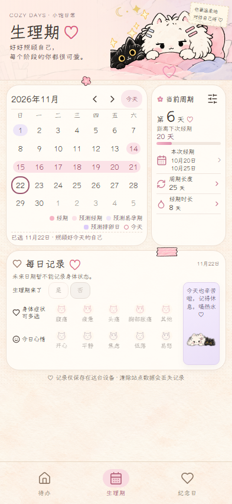
历史补录遇后续或近90天真实区间即要求结束日期；历史取消先确认明确范围，跨本地午夜确认直接拒绝。症状、心情、旧字段及流量日记保留，失败保存支持重试。
验证记录与已知边界
完整 E2E、普通构建、Pages 构建及 Pages 交互结果与源码 SHA 见 source.json。原始日志位于仓库 docs/v022/logs；F1–F12 覆盖映射位于 docs/v022/verification.md。未访问真实 IndexedDB，未更改 Android 配置，未发布到正式站点。